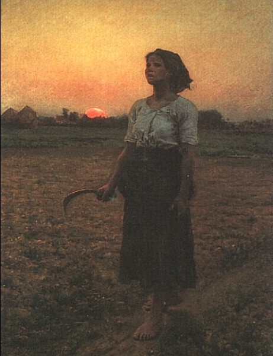

人物略偏右，垂直身体对抗低矮地平线。镰刀与前移的脚保留行走惯性，抬头方向则把视线送向画外上方。
蜂蜜金与杏橙过渡到烟青灰：暖色不直撞高饱和蓝，而由灰绿承接。红日不到 1%，仍凭暖度与圆形成为第二焦点。
人物与衣褶细密，田地和远景更概括；细节由身体向外递减。逆光没有英雄式地照亮她，最亮在天空、最暗在裙摆，像一天尚未完全开启。
事实：Jules Breton（1827–1906）出生于法国北部 Courrières，以理想化的乡村劳动场景闻名。本作完成于 1884 年，翌年亮相巴黎沙龙。
上句为“每日艺术”的观看分析，并非作者原话。
Jules Breton，《The Song of the Lark》，1884，布面油画，110.6 × 85.8 cm，Art Institute of Chicago，1894.1033。图像：Wikimedia Commons，461 × 600，Public Domain Mark 1.0；馆藏页标记 CC0。图片版权归原作者及相关权利人；赏析为“每日艺术”原创分析。